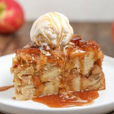

Bread Pudding

A classic that never goes out of style!
This bread pudding recipe is probably the best I've had so far. The cinnamon and nutmeg compliment
each other so well. It's light and fluffy so it absorbs any kind of sauce you could imagine.
Ingredients
- 1 dozen eggs
- 3 cups of white sugar
- 1 cup of brown sugar
- 2 tablespoons of cinnamon
- 1 tablespoon of nutmeg
- Quarter pound of butter, melted
- 3 cups of milk
- 3 cups of heavy cream
- Lots of bread, preferably stale
Steps
- Preheat oven to 350
- Add eggs to mixing bowl and whisk thoroughly
- Add white sugar, brown sugar, cinnamon, and nutmeg. Mix thoroughly
- While mixing, slowly stream in melted butter
- Add milk and heavy cream. Mix thoroughly and be sure to scrape the sides
of the bowl for sugar buildup.
- Add bread and mix until desired consistency is reached.
- Add mixture to a greased hotel pan and put in oven for about 40 minutes.